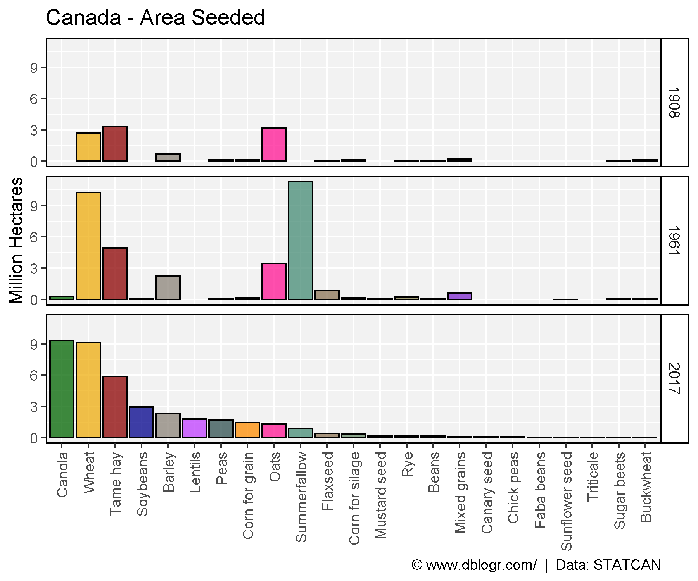
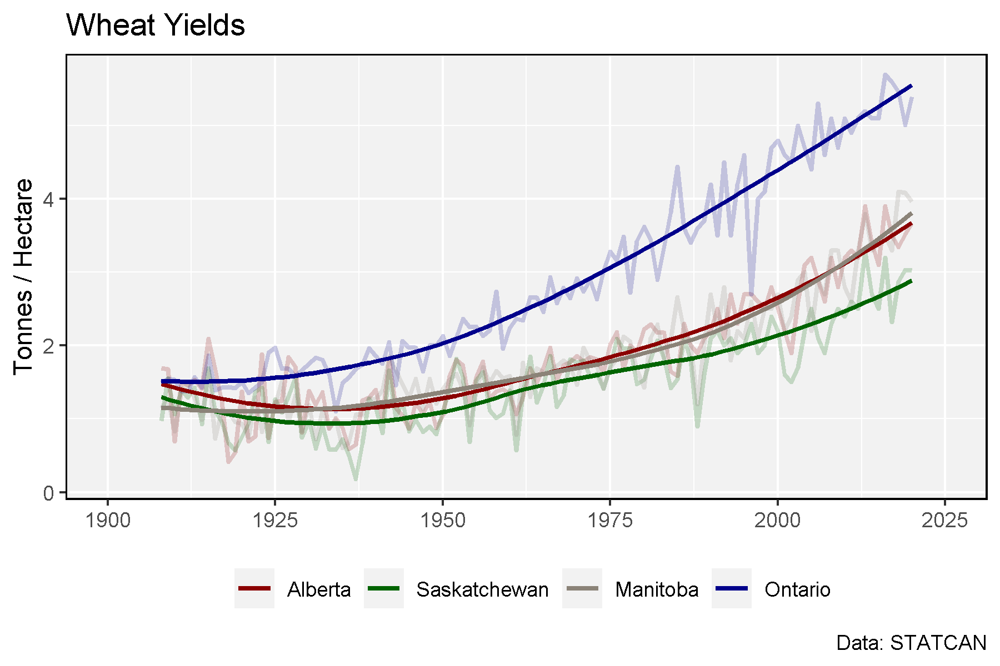

Farmland by Province
2016
# Prep data
yy <- agData_STATCAN_Region_Table
xx <- agData_STATCAN_FarmLand_Use %>%
filter(Year == 2016, Item == "Total area of farms", Unit == "Hectares")
x1 <- xx %>% filter(Area == "Canada")
xx <- xx %>% filter(Area != "Canada") %>%
mutate(Percent = round(100 * Value / x1$Value, 1)) %>%
arrange(Percent) %>%
mutate(Area = factor(Area, levels = rev(Area)),
Area_Short = plyr::mapvalues(Area, yy$Area, yy$Area_Short))
# What is the total amount of farmland in Canada?
sum(xx$Value)
## [1] 64232948
# Plot
mp <- ggplot(xx, aes(x = Area_Short, y = Value / 1000000)) +
geom_bar(aes(fill = Area), stat = "identity", color = "black") +
geom_label(aes(label = paste(Percent, "%")), nudge_y = 1.1, size = 3) +
scale_fill_manual(values = agData_Colors) +
theme_agData(legend.position = "none", rotx = T) +
labs(title = "Canadian Farmland (2016)",
caption = "\xa9 www.dblogr.com/ | Data: STATCAN",
x = NULL, y = "Million Hectares")
ggsave("crops_canada_01.png", mp, width = 6, height = 4)

Provinces
xx <- agData_STATCAN_FarmLand_Farms %>%
filter(Measurement == "Total area of farms",
Area != "Canada")
mp <- ggplot(xx, aes(x = Year, y = Value / 1000000)) +
geom_line(color = "darkgreen", size = 1.25) +
facet_wrap(. ~ Area, scales = "free_y", ncol = 5) +
theme_agData() +
labs(title = "Canadian Farmland",
caption = "\xa9 www.dblogr.com/ | Data: STATCAN",
x = NULL, y = "Million Hectares")
ggsave("crops_canada_02.png", mp, width = 12, height = 5)

Treemap
# Prep data
xx <- agData_STATCAN_Crops %>%
filter(Area == "Canada", Year == 2019, Measurement == "Seeded area") %>%
arrange(desc(Value)) %>% mutate(Crop = factor(Crop, levels = unique(Crop)))
# Plot
mp <- ggplot(xx, aes(area = Value, fill = Crop, label = Crop)) +
geom_treemap(color = "black") +
geom_treemap_text(place = "centre", grow = T, color = "white") +
scale_fill_manual(values = alpha(agData_Colors, 0.75)) +
theme_agData(legend.position = "none") +
labs(title = "Canada Cropland by Area",
caption = "\xa9 www.dblogr.com/ | Data: STATCAN")
ggsave("crops_canada_03.png", mp, width = 6, height = 4)

Crop Production
# Create function to determine top crops
cropList <- function(measurement) {
# Prep data
xx <- agData_STATCAN_Crops %>%
filter(Area == "Canada", Measurement == measurement, Year %in% c(1908, 1961, 2017))
# Get top 15 crops from each year
topcrops <- function(x, year) {
x <- x %>% filter(Year == year) %>% arrange(desc(Value)) %>%
pull(Crop) %>% unique() %>% as.character()
}
crops1908 <- topcrops(xx, 1908)
crops1961 <- topcrops(xx, 1961)
crops2017 <- topcrops(xx, 2017)
# Order crop list based on 2017 production
myCrops <- unique(c(crops1908, crops1961, crops2017))
xx %>% filter(Year == 2017, Crop %in% myCrops) %>%
arrange(desc(Value)) %>% pull(Crop) %>% as.character()
}
Crop Production 1908, 1961, 2017
# Prep data
myCrops <- cropList(measurement = "Production")
xx <- agData_STATCAN_Crops %>%
filter(Area == "Canada", Year %in% c(1908, 1961, 2017),
Measurement == "Production", Crop %in% myCrops) %>%
mutate(Crop = factor(Crop, levels = myCrops),
Crop = recode(Crop, "Beans, all dry (white and coloured)" = "Beans, all dry") )
# Plot
mp <- ggplot(xx, aes(x = Crop, y = Value / 1000000, fill = Crop)) +
geom_bar(stat = "identity", color = "Black") +
facet_grid(Year~.) +
scale_fill_manual(values = alpha(agData_Colors, 0.75)) +
theme_agData(legend.position = "none", rotx = T) +
labs(title = "Canada - Crop Production", y = "Million Tonnes", x = NULL,
caption = "\xa9 www.dblogr.com/ | Data: STATCAN")
ggsave("crops_canada_04.png", mp, width = 6, height = 5)

Crop Area 1908, 1961, 2017
# Prep data
myCrops <- cropList(measurement = "Seeded area")
xx <- agData_STATCAN_Crops %>%
filter(Area == "Canada", Year %in% c(1908, 1961, 2017),
Measurement == "Seeded area", Crop %in% myCrops) %>%
mutate(Crop = factor(Crop, levels = myCrops),
Crop = recode(Crop, "Beans, all dry (white and coloured)" = "Beans, all dry") )
# Plot
mp <- ggplot(xx, aes(x = Crop, y = Value / 1000000, fill = Crop)) +
geom_bar(stat = "identity", color = "Black") +
facet_grid(Year~.) +
scale_fill_manual(values = alpha(agData_Colors, 0.75)) +
theme_agData(legend.position = "none", rotx = T) +
labs(title = "Canada - Area Seeded", y = "Million Hectares", x = NULL,
caption = "\xa9 www.dblogr.com/ | Data: STATCAN")
ggsave("crops_canada_05.png", mp, width = 6, height = 5)

# Prep data
myCrops <- cropList(measurement = "Seeded area")
xx <- agData_STATCAN_Crops %>%
filter(Area == "Canada",
Measurement == "Seeded area", Crop %in% myCrops) %>%
mutate(Crop = factor(Crop, levels = myCrops),
Crop = recode(Crop, "Beans, all dry (white and coloured)" = "Beans, all dry") )
# Plot
mp <- ggplot(xx, aes(x = Crop, y = Value / 1000000, fill = Crop)) +
geom_bar(stat = "identity", color = "Black") +
geom_text(aes(label = Year), x = 17, y = 14, size = 15) +
scale_fill_manual(values = alpha(agData_Colors, 0.75)) +
theme_agData(legend.position = "none", rotx = T) +
labs(title = "Canada - Area Seeded", y = "Million Hectares", x = NULL,
caption = "\xa9 www.dblogr.com/ | Data: STATCAN") +
# gganimate
transition_states(Year)
mp <- animate(mp, nframes = 2*(max(xx$Year) - min(xx$Year)), fps = 5, end_pause = 5)
anim_save("crops_canada_gifs_01.gif", mp, width = 600, height = 400)

Wheat
# Prep data
areas <- c("Alberta", "Saskatchewan", "Manitoba", "Ontario")
colors <- c("darkred", "darkgreen", "antiquewhite4", "darkblue")
xx <- agData_STATCAN_Crops %>%
filter(Crop == "Wheat", Measurement == "Yield",
Area %in% areas)
# Plot
mp <- ggplot(xx, aes(x = Year, y = Value / 1000, color = Area)) +
geom_line(size = 1, alpha = 0.2) +
geom_smooth(method = "loess", alpha = 0.8, se = F) +
scale_color_manual(name = NULL, values = colors) +
scale_x_continuous(breaks = seq(1900, 2025, 25), limits = c(1900,2025)) +
theme_agData(legend.position = "bottom") +
labs(title = "Wheat Yields",
y = "Tonnes / Hectare", x = NULL,
caption = "Data: STATCAN")
ggsave("crops_canada_06.png", mp, width = 6, height = 4)

© Derek Michael Wright www.dblogr.com/